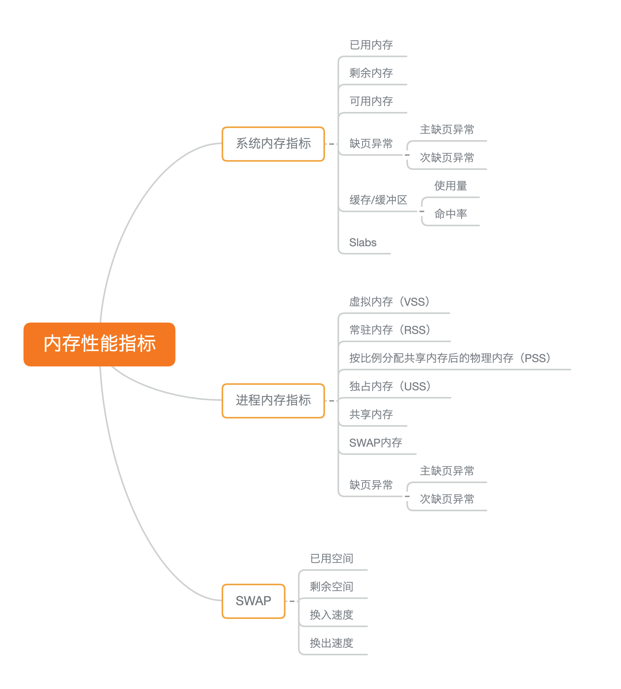
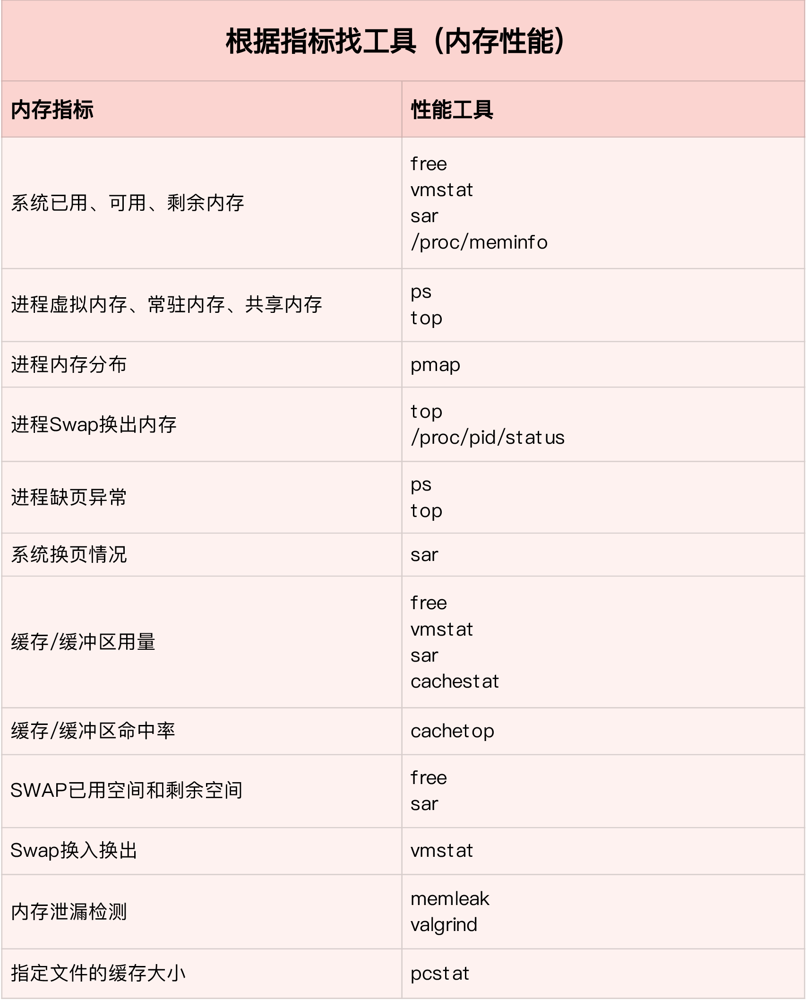
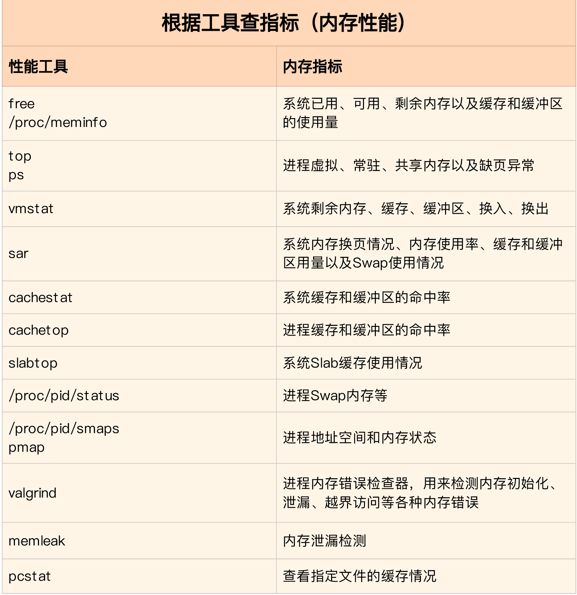
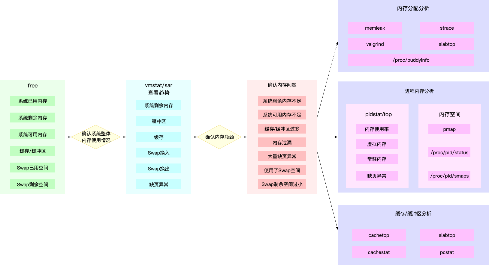

- 00 开篇词 别再让Linux性能问题成为你的绊脚石.md.html
- 01 如何学习Linux性能优化？.md.html
- 02 基础篇：到底应该怎么理解“平均负载”？.md.html
- 03 基础篇：经常说的 CPU 上下文切换是什么意思？（上）.md.html
- 04 基础篇：经常说的 CPU 上下文切换是什么意思？（下）.md.html
- 05 基础篇：某个应用的CPU使用率居然达到100%，我该怎么办？.md.html
- 06 案例篇：系统的 CPU 使用率很高，但为啥却找不到高 CPU 的应用？.md.html
- 07 案例篇：系统中出现大量不可中断进程和僵尸进程怎么办？（上）.md.html
- 08 案例篇：系统中出现大量不可中断进程和僵尸进程怎么办？（下）.md.html
- 09 基础篇：怎么理解Linux软中断？.md.html
- 10 案例篇：系统的软中断CPU使用率升高，我该怎么办？.md.html
- 11 套路篇：如何迅速分析出系统CPU的瓶颈在哪里？.md.html
- 12 套路篇：CPU 性能优化的几个思路.md.html
- 13 答疑（一）：无法模拟出 RES 中断的问题，怎么办？.md.html
- 14 答疑（二）：如何用perf工具分析Java程序？.md.html
- 15 基础篇：Linux内存是怎么工作的？.md.html
- 16 基础篇：怎么理解内存中的Buffer和Cache？.md.html
- 17 案例篇：如何利用系统缓存优化程序的运行效率？.md.html
- 18 案例篇：内存泄漏了，我该如何定位和处理？.md.html
- 19 案例篇：为什么系统的Swap变高了（上）.md.html
- 20 案例篇：为什么系统的Swap变高了？（下）.md.html
- 21 套路篇：如何“快准狠”找到系统内存的问题？.md.html
- 22 答疑（三）：文件系统与磁盘的区别是什么？.md.html
- 23 基础篇：Linux 文件系统是怎么工作的？.md.html
- 24 基础篇：Linux 磁盘I_O是怎么工作的（上）.md.html
- 25 基础篇：Linux 磁盘I_O是怎么工作的（下）.md.html
- 26 案例篇：如何找出狂打日志的“内鬼”？.md.html
- 27 案例篇：为什么我的磁盘I_O延迟很高？.md.html
- 28 案例篇：一个SQL查询要15秒，这是怎么回事？.md.html
- 29 案例篇：Redis响应严重延迟，如何解决？.md.html
- 30 套路篇：如何迅速分析出系统I_O的瓶颈在哪里？.md.html
- 31 套路篇：磁盘 I_O 性能优化的几个思路.md.html
- 32 答疑（四）：阻塞、非阻塞 I_O 与同步、异步 I_O 的区别和联系.md.html
- 33 关于 Linux 网络，你必须知道这些（上）.md.html
- 34 关于 Linux 网络，你必须知道这些（下）.md.html
- 35 基础篇：C10K 和 C1000K 回顾.md.html
- 36 套路篇：怎么评估系统的网络性能？.md.html
- 37 案例篇：DNS 解析时快时慢，我该怎么办？.md.html
- 38 案例篇：怎么使用 tcpdump 和 Wireshark 分析网络流量？.md.html
- 39 案例篇：怎么缓解 DDoS 攻击带来的性能下降问题？.md.html
- 40 案例篇：网络请求延迟变大了，我该怎么办？.md.html
- 41 案例篇：如何优化 NAT 性能？（上）.md.html
- 42 案例篇：如何优化 NAT 性能？（下）.md.html
- 43 套路篇：网络性能优化的几个思路（上）.md.html
- 44 套路篇：网络性能优化的几个思路（下）.md.html
- 45 答疑（五）：网络收发过程中，缓冲区位置在哪里？.md.html
- 46 案例篇：为什么应用容器化后，启动慢了很多？.md.html
- 47 案例篇：服务器总是时不时丢包，我该怎么办？（上）.md.html
- 48 案例篇：服务器总是时不时丢包，我该怎么办？（下）.md.html
- 49 案例篇：内核线程 CPU 利用率太高，我该怎么办？.md.html
- 50 案例篇：动态追踪怎么用？（上）.md.html
- 51 案例篇：动态追踪怎么用？（下）.md.html
- 52 案例篇：服务吞吐量下降很厉害，怎么分析？.md.html
- 53 套路篇：系统监控的综合思路.md.html
- 54 套路篇：应用监控的一般思路.md.html
- 55 套路篇：分析性能问题的一般步骤.md.html
- 56 套路篇：优化性能问题的一般方法.md.html
- 57 套路篇：Linux 性能工具速查.md.html
- 58 答疑（六）：容器冷启动如何性能分析？.md.html
- 加餐（一） 书单推荐：性能优化和Linux 系统原理.md.html
- 加餐（二） 书单推荐：网络原理和 Linux 内核实现.md.html
- 用户故事 “半路出家 ”，也要顺利拿下性能优化！.md.html
- 用户故事 运维和开发工程师们怎么说？.md.html
- 结束语 愿你攻克性能难关.md.html
- 捐赠
21 套路篇：如何“快准狠”找到系统内存的问题？
你好，我是倪朋飞。
前几节，通过几个案例，我们分析了各种常见的内存性能问题。我相信通过它们，你对内存的性能分析已经有了基本的思路，也熟悉了很多分析内存性能的工具。你肯定会想，有没有迅速定位内存问题的方法？当定位出内存的瓶颈后，又有哪些优化内存的思路呢？
今天，我就来帮你梳理一下，怎样可以快速定位系统内存，并且总结了相关的解决思路。
内存性能指标
为了分析内存的性能瓶颈，首先你要知道，怎样衡量内存的性能，也就是性能指标问题。我们先来回顾一下，前几节学过的内存性能指标。
你可以自己先找张纸，凭着记忆写一写；或者打开前面的文章，自己总结一下。
首先，你最容易想到的是系统内存使用情况，比如已用内存、剩余内存、共享内存、可用内存、缓存和缓冲区的用量等。
已用内存和剩余内存很容易理解，就是已经使用和还未使用的内存。
共享内存是通过tmpfs实现的，所以它的大小也就是tmpfs使用的内存大小。tmpfs其实也是一种特殊的缓存。
可用内存是新进程可以使用的最大内存，它包括剩余内存和可回收缓存。
缓存包括两部分，一部分是磁盘读取文件的页缓存，用来缓存从磁盘读取的数据，可以加快以后再次访问的速度。另一部分，则是Slab分配器中的可回收内存。
缓冲区是对原始磁盘块的临时存储，用来缓存将要写入磁盘的数据。这样，内核就可以把分散的写集中起来，统一优化磁盘写入。
第二类很容易想到的，应该是进程内存使用情况，比如进程的虚拟内存、常驻内存、共享内存以及Swap内存等。
虚拟内存，包括了进程代码段、数据段、共享内存、已经申请的堆内存和已经换出的内存等。这里要注意，已经申请的内存，即使还没有分配物理内存，也算作虚拟内存。
常驻内存是进程实际使用的物理内存，不过，它不包括Swap和共享内存。
共享内存，既包括与其他进程共同使用的真实的共享内存，还包括了加载的动态链接库以及程序的代码段等。
Swap内存，是指通过Swap换出到磁盘的内存。
当然，这些指标中，常驻内存一般会换算成占系统总内存的百分比，也就是进程的内存使用率。
除了这些很容易想到的指标外，我还想再强调一下，缺页异常。
在内存分配的原理中，我曾经讲到过，系统调用内存分配请求后，并不会立刻为其分配物理内存，而是在请求首次访问时，通过缺页异常来分配。缺页异常又分为下面两种场景。
可以直接从物理内存中分配时，被称为次缺页异常。
需要磁盘I/O介入（比如Swap）时，被称为主缺页异常。
显然，主缺页异常升高，就意味着需要磁盘I/O，那么内存访问也会慢很多。
除了系统内存和进程内存，第三类重要指标就是Swap的使用情况，比如Swap的已用空间、剩余空间、换入速度和换出速度等。
已用空间和剩余空间很好理解，就是字面上的意思，已经使用和没有使用的内存空间。
换入和换出速度，则表示每秒钟换入和换出内存的大小。
这些内存的性能指标都需要我们熟记并且会用，我把它们汇总成了一个思维导图，你可以保存打印出来，或者自己仿照着总结一份。

内存性能工具
了解了内存的性能指标，我们还得知道，怎么才能获得这些指标，也就是会用性能工具。这里，我们也用同样的方法，回顾一下前面案例中已经用到的各种内存性能工具。 还是鼓励你先自己回忆和总结一下。
首先，你应该注意到了，所有的案例中都用到了free。这是个最常用的内存工具，可以查看系统的整体内存和Swap使用情况。相对应的，你可以用top或ps，查看进程的内存使用情况。
然后，在缓存和缓冲区的原理篇中，我们通过proc文件系统，找到了内存指标的来源；并通过vmstat，动态观察了内存的变化情况。与free相比，vmstat除了可以动态查看内存变化，还可以区分缓存和缓冲区、Swap换入和换出的内存大小。
接着，在缓存和缓冲区的案例篇中，为了弄清楚缓存的命中情况，我们又用了cachestat ，查看整个系统缓存的读写命中情况，并用 cachetop 来观察每个进程缓存的读写命中情况。
再接着，在内存泄漏的案例中，我们用vmstat，发现了内存使用在不断增长，又用memleak，确认发生了内存泄漏。通过memleak给出的内存分配栈，我们找到了内存泄漏的可疑位置。
最后，在Swap的案例中，我们用sar发现了缓冲区和Swap升高的问题。通过cachetop，我们找到了缓冲区升高的根源；通过对比剩余内存跟/proc/zoneinfo的内存阈，我们发现Swap升高是内存回收导致的。案例最后，我们还通过/proc文件系统，找出了Swap所影响的进程。
到这里，你是不是再次感觉到了来自性能世界的“恶意”。性能工具怎么那么多呀？其实，还是那句话，理解内存的工作原理，结合性能指标来记忆，拿下工具的使用方法并不难。
性能指标和工具的联系
同CPU性能分析一样，我的经验是两个不同维度出发，整理和记忆。
从内存指标出发，更容易把工具和内存的工作原理关联起来。
从性能工具出发，可以更快地利用工具，找出我们想观察的性能指标。特别是在工具有限的情况下，我们更得充分利用手头的每一个工具，挖掘出更多的问题。
同样的，根据内存性能指标和工具的对应关系，我做了两个表格，方便你梳理关系和理解记忆。当然，你也可以当成“指标工具”和“工具指标”指南来用，在需要时直接查找。
第一个表格，从内存指标出发，列举了哪些性能工具可以提供这些指标。这样，在实际排查性能问题时，你就可以清楚知道，究竟要用什么工具来辅助分析，提供你想要的指标。

第二个表格，从性能工具出发，整理了这些常见工具能提供的内存指标。掌握了这个表格，你可以最大化利用已有的工具，尽可能多地找到你要的指标。
这些工具的具体使用方法并不用背，你只要知道有哪些可用的工具，以及这些工具提供的基本指标。真正用到时， man 一下查它们的使用手册就可以了。

如何迅速分析内存的性能瓶颈
我相信到这一步，你对内存的性能指标已经非常熟悉，也清楚每种性能指标分别能用什么工具来获取。
那是不是说，每次碰到内存性能问题，你都要把上面这些工具全跑一遍，然后再把所有内存性能指标全分析一遍呢？
自然不是。前面的CPU性能篇我们就说过，简单查找法，虽然是有用的，也很可能找到某些系统潜在瓶颈。但是这种方法的低效率和大工作量，让我们首先拒绝了这种方法。
还是那句话，在实际生产环境中，我们希望的是，尽可能快地定位系统瓶颈，然后尽可能快地优化性能，也就是要又快又准地解决性能问题。
那有没有什么方法，可以又快又准地分析出系统的内存问题呢？
方法当然有。还是那个关键词，找关联。其实，虽然内存的性能指标很多，但都是为了描述内存的原理，指标间自然不会完全孤立，一般都会有关联。当然，反过来说，这些关联也正是源于系统的内存原理，这也是我总强调基础原理的重要性，并在文章中穿插讲解。
举个最简单的例子，当你看到系统的剩余内存很低时，是不是就说明，进程一定不能申请分配新内存了呢？当然不是，因为进程可以使用的内存，除了剩余内存，还包括了可回收的缓存和缓冲区。
所以，为了迅速定位内存问题，我通常会先运行几个覆盖面比较大的性能工具，比如free、top、vmstat、pidstat等。
具体的分析思路主要有这几步。
先用free和top，查看系统整体的内存使用情况。
再用vmstat和pidstat，查看一段时间的趋势，从而判断出内存问题的类型。
最后进行详细分析，比如内存分配分析、缓存/缓冲区分析、具体进程的内存使用分析等。
同时，我也把这个分析过程画成了一张流程图，你可以保存并打印出来使用。

图中列出了最常用的几个内存工具，和相关的分析流程。其中，箭头表示分析的方向，举几个例子你可能会更容易理解。
第一个例子，当你通过free，发现大部分内存都被缓存占用后，可以使用vmstat或者sar观察一下缓存的变化趋势，确认缓存的使用是否还在继续增大。
如果继续增大，则说明导致缓存升高的进程还在运行，那你就能用缓存/缓冲区分析工具（比如cachetop、slabtop等），分析这些缓存到底被哪里占用。
第二个例子，当你free一下，发现系统可用内存不足时，首先要确认内存是否被缓存/缓冲区占用。排除缓存/缓冲区后，你可以继续用pidstat或者top，定位占用内存最多的进程。
找出进程后，再通过进程内存空间工具（比如pmap），分析进程地址空间中内存的使用情况就可以了。
第三个例子，当你通过vmstat或者sar发现内存在不断增长后，可以分析中是否存在内存泄漏的问题。
比如你可以使用内存分配分析工具 memleak ，检查是否存在内存泄漏。如果存在内存泄漏问题，memleak会为你输出内存泄漏的进程以及调用堆栈。
注意，这个图里我没有列出所有性能工具，只给出了最核心的几个。这么做，一方面，确实不想让大量的工具列表吓到你。
另一方面，希望你能把重心先放在核心工具上，通过我提供的案例和真实环境的实践，掌握使用方法和分析思路。 毕竟熟练掌握它们，你就可以解决大多数的内存问题。
小结
在今天的文章中，我带你回顾了常见的内存性能指标，梳理了常见的内存性能分析工具，最后还总结了快速分析内存问题的思路。
虽然内存的性能指标和性能工具都挺多，但理解了内存管理的基本原理后，你会发现它们其实都有一定的关联。梳理出它们的关系，掌握内存分析的套路并不难。
找到内存问题的来源后，下一步就是相应的优化工作了。在我看来，内存调优最重要的就是，保证应用程序的热点数据放到内存中，并尽量减少换页和交换。
常见的优化思路有这么几种。
最好禁止 Swap。如果必须开启Swap，降低swappiness的值，减少内存回收时Swap的使用倾向。
减少内存的动态分配。比如，可以使用内存池、大页（HugePage）等。
尽量使用缓存和缓冲区来访问数据。比如，可以使用堆栈明确声明内存空间，来存储需要缓存的数据；或者用Redis 这类的外部缓存组件，优化数据的访问。
使用cgroups等方式限制进程的内存使用情况。这样，可以确保系统内存不会被异常进程耗尽。
通过 /proc/pid/oom_adj ，调整核心应用的oom_score。这样，可以保证即使内存紧张，核心应用也不会被OOM杀死。
思考
由于篇幅限制，我在这里只列举了一些我认为的重要内存指标和分析思路。我想，你肯定也碰到过很多内存相关的性能问题。所以，我想请你来聊一聊，你处理过的内存性能问题，你是怎样分析它的瓶颈并解决的呢？这个过程中，遇到了什么坑，或者有什么重要收获吗？
欢迎在留言区跟我讨论，也欢迎把这篇文章分享给你的同事、朋友。我们一起在实战中演练，在交流中进步。
© 2019 - 2023 Liangliang Lee. Powered by gin and hexo-theme-book.